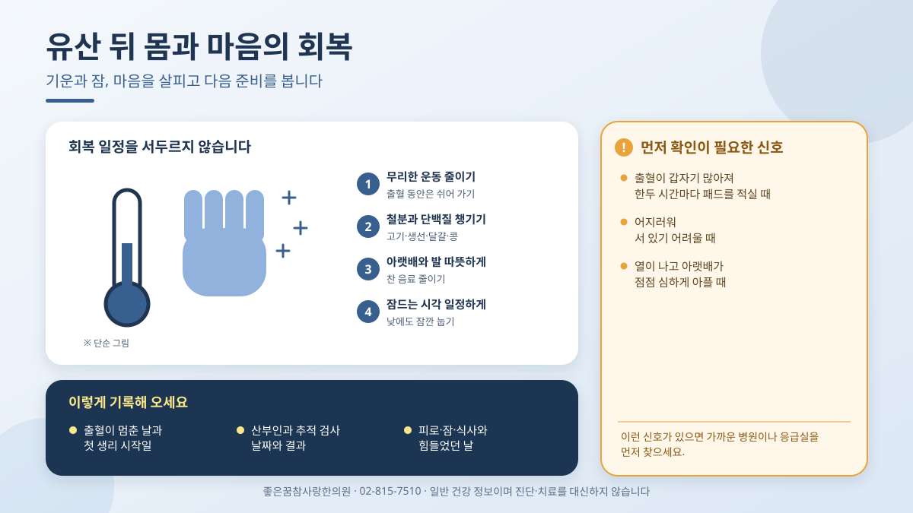

이종호 한의사 감수좋은꿈참사랑한의원 대표원장 (한의사 면허번호 19769)발행 2026-11-26 · 수정 2026-11-26
이 글의 차례
병원 문을 나서는데 바깥 햇볕이 낯설게 밝습니다. 며칠 전까지 아기 이름을 고르고 있었는데, 이제는 무엇을 해야 할지 모르겠습니다. 몸은 조금씩 추스르고 있지만, 길에서 유모차를 보면 눈물이 먼저 납니다. 주변에서는 "금방 또 생길 거야"라고 하는데, 그 말이 위로가 되지 않습니다.
유산은 생각보다 많은 분이 겪는 일입니다. 임신 초기 유산의 상당수는 수정란 자체의 염색체 문제처럼 누구도 막기 어려운 이유로 일어난다고 알려져 있습니다. 무거운 것을 들어서, 커피를 마셔서, 일을 해서 생긴 일이 아닌 경우가 대부분입니다.
그래도 마음은 자꾸 스스로를 탓합니다. 저는 진료실에서 이 이야기를 꺼내시는 분께 먼저 말씀드립니다. 당신 탓이 아니라고요. 그리고 몸이 회복할 시간과 마음이 슬퍼할 시간을 함께 내어 주자고요. 다음 임신은 그 뒤에 천천히 이야기해도 늦지 않습니다.
왜 유산 뒤에는 몸이 회복할 시간이 필요할까요
유산 뒤에는 자궁이 임신 전 크기로 돌아가며 며칠에서 몇 주 동안 출혈이 이어질 수 있습니다. 출혈은 처음에는 생리처럼 나오다 점점 줄어드는 흐름이 흔합니다. 수술을 받았는지, 약으로 처치했는지, 자연스럽게 배출되었는지에 따라 그 기간이 조금씩 다릅니다.
임신으로 올라갔던 호르몬은 몇 주에 걸쳐 내려갑니다. 그동안 가슴이 땡기거나, 입덧 같은 느낌이 남거나, 감정이 크게 오르내릴 수 있습니다. 첫 생리는 대개 유산 뒤 4~6주 무렵 돌아오는 경우가 많다고 알려져 있지만, 사람마다 차이가 있습니다.
출혈로 빈혈이 생기면 어지럽고 쉽게 숨이 차며 피로가 오래갑니다. 잠을 못 자고 식사를 거르면 회복이 더 더뎌집니다. 그래서 몸의 회복은 출혈이 멈추는 것만이 아니라 기운과 잠, 식사가 제자리를 찾는 것까지를 포함한다고 생각해 주세요.
한의학에서는 유산을 출산에 버금가는 큰일로 보아, 그 뒤의 조리를 소산(小産) 조리라 부르며 출산 뒤처럼 몸을 따뜻하게 하고 기혈을 채우는 일을 중요하게 여겨 왔습니다. 임신 기간이 짧았다고 몸이 겪은 일이 작은 것은 아니라는 뜻입니다.
시기와 처치에 따라 이렇게 나눠 봅니다
임신 초기에 유산한 경우
임신 12주 이전의 초기 유산이 가장 흔합니다. 출혈과 아랫배 통증이 생리보다 조금 강하게 왔다가 가라앉는 경우가 많습니다. 몸의 회복은 비교적 빠른 편이지만, 마음의 회복은 주수와 상관없이 오래 걸릴 수 있습니다.
수술이나 약물 처치를 받은 경우
자궁 안에 남은 조직을 정리하기 위해 수술이나 약물 처치를 받으셨다면, 처치 뒤 산부인과에서 안내한 추적 검사를 꼭 마치시는 것이 먼저입니다. 처치 뒤 생리 양이 갑자기 줄거나 생리가 오래 돌아오지 않는다면 산부인과에 말씀해 주세요.
유산이 반복된 경우
유산을 두 번 이상 겪으셨다면 산부인과에서 원인을 찾는 검사를 상의해 보실 수 있습니다. 호르몬, 자궁 모양, 혈액 응고, 염색체처럼 확인할 수 있는 것들이 있습니다. 한의원에서는 그 검사 결과를 함께 보며 몸의 흐름을 살핍니다.
마음의 회복은 따로 시간이 필요합니다
유산 뒤의 슬픔은 아기를 잃은 슬픔입니다. 주수가 짧았다고 슬픔이 작은 것이 아닙니다. 그런데 주변에서는 그 슬픔을 잘 알아채지 못하거나, 빨리 잊으라고 말하기도 합니다. 그래서 혼자 삼키는 분이 많습니다.
슬픔, 죄책감, 화, 허무함, 다른 임신부를 볼 때의 복잡한 마음은 모두 자연스러운 반응입니다. 시간이 지나며 조금씩 옅어지지만, 예정일이나 기념일 무렵 다시 짙어지기도 합니다. 그럴 때 마음이 거꾸로 간다고 실망하지 마세요.
잠이 무너지면 슬픔도 더 깊어집니다. 밤에 생각이 꼬리를 물어 잠들기 어렵다면, 잠자리에 들기 전 휴대폰을 내려놓고 따뜻한 물로 발을 씻거나 천천히 숨을 고르는 시간을 가져 보세요. 잠이 조금이라도 이어지면 낮의 마음도 덜 흔들리는 분이 많습니다.
배우자도 함께 슬퍼합니다. 다만 표현하는 방식이 달라 서로 서운해지기도 합니다. 서로의 슬픔을 견주기보다 "나는 요즘 이런 마음이야" 하고 말로 나눠 보세요. 마음이 2주 넘게 깊이 가라앉아 일상이 어렵다면 정신건강의학과 상담을 함께 받아 보시길 권합니다.
스스로 점검해 보세요
아래 가운데 해당하는 줄에 표시해 두셨다가 진료 때 보여 주세요. 진단을 내리려는 목록은 아닙니다.
- 출혈이 2주 넘게 이어지거나 줄었다 다시 늘었다
- 유산 뒤 두 달이 지나도 생리가 돌아오지 않았다
- 첫 생리의 양이 예전보다 눈에 띄게 적거나 많았다
- 어지럽고 쉽게 숨이 차며 피로가 오래간다
- 잠이 얕고 밤에 자주 깬다
- 마음이 가라앉은 날이 2주 넘게 이어진다
- 아랫배와 손발이 유난히 차게 느껴진다
주변의 말이 상처가 될 때
"금방 또 생길 거야", "그래도 일찍 알아서 다행이야" 같은 말은 위로하려는 마음에서 나오지만, 듣는 사람에게는 상처가 되기도 합니다. 그런 말에 서운한 마음이 드는 것은 이상한 일이 아닙니다.
가까운 사람에게 "지금은 그냥 들어 주면 좋겠어"라고 부탁해 보세요. 마음을 털어놓을 곳이 마땅치 않다면 진료실에서 이야기하셔도 괜찮습니다. 비슷한 일을 겪은 분들의 모임이나 상담 기관이 도움이 되는 분도 있습니다.
먼저 이렇게 여쭙니다
진료실에서는 대략 이런 순서로 여쭙습니다. 대답하기 어려운 질문은 건너뛰셔도 괜찮습니다.
- 유산은 언제, 임신 몇 주에 있었나요?
- 수술이나 약물 처치를 받으셨나요? 산부인과 추적 검사는 마치셨나요?
- 출혈은 멈췄나요? 첫 생리는 돌아왔나요?
- 빈혈이나 갑상선, 호르몬 검사를 받으신 적이 있나요?
- 잠, 식사, 대변, 땀은 어떤가요? 몸이 찬 편인가요, 열이 오르는 편인가요?
- 이전에도 유산을 겪으신 적이 있나요?
- 다음 임신은 언제쯤 생각하고 계신가요?
다음 임신 계획을 여쭙는 것은 서두르자는 뜻이 아닙니다. 계획에 따라 지금 쓸 수 있는 방법과 조심할 것이 달라지기 때문입니다. 아직 생각할 여유가 없으시면 "모르겠어요"라고 하셔도 충분합니다.
일상에서 먼저 해 볼 수 있는 것
유산 뒤 몇 주는 몸을 돌보는 시간입니다. 아래에서 지금 할 수 있는 것을 골라 보세요.
- 출혈이 있는 동안은 무리한 운동과 오래 서 있는 일을 줄이기
- 출혈이 멈출 때까지 목욕탕, 수영장, 부부관계는 산부인과 안내에 따라 미루기
- 고기, 생선, 달걀, 콩, 짙은 녹색 채소로 끼니마다 철분과 단백질 챙기기
- 아랫배와 발을 따뜻하게 하고, 찬 음료와 얇은 옷차림 줄이기
- 잠드는 시각을 일정하게 하고, 낮에 잠깐이라도 눕기
- 회사에는 가능한 만큼 휴가를 내고, 회복 일정을 무리하게 당기지 않기
출혈이 멈추고 기운이 조금 돌아오면 가벼운 걷기부터 다시 시작하세요. 햇볕을 쬐며 걷는 시간은 몸뿐 아니라 마음에도 숨 쉴 틈을 줍니다. 갑자기 강한 운동으로 몸을 몰아붙이기보다 일주일 단위로 천천히 늘려 가세요.
먹는 것은 거창하지 않아도 됩니다. 따뜻한 밥과 국, 반찬 몇 가지를 끼니 거르지 않고 드시는 것이 가장 큰 보약입니다. 입맛이 없다면 죽이나 달걀찜처럼 부드러운 음식부터 시작하세요. 술은 몸이 회복될 때까지 쉬어 가시길 권합니다. 커피는 하루 한 잔 정도로 줄이고, 늦은 오후에는 피하시면 잠에도 도움이 됩니다.
인터넷에서 원인을 찾고 또 찾다 보면 마음이 더 지칩니다. 궁금한 것은 메모해 두었다가 산부인과 진료 때 묻고, 하루 중 검색하는 시간을 정해 두는 것도 방법입니다.
일상으로 돌아갈 때
출혈이 멈추고 나면 주변에서는 다 나은 줄 압니다. 회사로, 집안일로 금세 돌아가야 하는 분이 많습니다. 그런데 몸은 아직 회복 중이고, 마음은 더 오래 걸립니다. 돌아가는 첫 주는 일정을 평소의 절반쯤으로 잡아 보세요.
임신 사실을 알렸던 동료나 가족에게 다시 이야기를 꺼내는 일이 부담스러울 수 있습니다. 가까운 한 사람에게 대신 전해 달라고 부탁하거나, "지금은 이야기하기 어렵다"고 짧게 말해 두셔도 괜찮습니다. 모든 질문에 답할 필요는 없습니다.
몸이 찬 쪽과 열이 오르는 쪽
유산 뒤 회복을 살필 때 저는 몸의 온도를 꼭 여쭙니다. 아랫배와 손발이 차고, 생리 때 덩어리가 섞이며, 따뜻하게 하면 편한 분이 있습니다. 이런 분은 찬 음식과 얇은 옷차림을 줄이고 아랫배와 발을 따뜻하게 하는 일이 먼저입니다.
반대로 얼굴이 달아오르고, 밤에 식은땀이 나며, 입이 마르고 잠이 얕은 분도 있습니다. 출혈과 잠 부족으로 몸의 진액이 줄어든 모습으로 보기도 합니다. 이런 분은 따뜻하게만 하기보다 잠을 먼저 챙기고 맵고 기름진 음식을 줄이는 편이 맞습니다.
같은 유산 뒤라도 몸이 기운 쪽이 달라서, 진찰 뒤 그 사람에게 맞는 방향을 함께 정합니다. 주변에서 권하는 보양식이나 민간요법도 내 몸에 맞는지 먼저 상의해 주세요.
다음 임신은 언제, 어떻게 준비할까요
다음 임신 시기는 산부인과와 상의해 정하는 것이 가장 정확합니다. 초기 유산 뒤에는 몸이 회복되고 생리가 한두 번 돌아온 뒤 준비하는 경우가 많지만, 처치 방법이나 검사 결과에 따라 달라질 수 있습니다.
준비를 시작한다면 엽산 복용, 금연과 절주, 체중과 혈당·갑상선 관리처럼 일반적인 임신 준비를 부부가 함께 챙기세요. 남편 쪽 생활 습관도 함께 살펴보는 것이 좋습니다. 생리 달력을 다시 적기 시작하면 주기의 흐름이 보입니다.
마음의 준비도 몸만큼 중요합니다. 다음 임신을 기다리는 동안, 그리고 다음 임신이 되었을 때 불안이 커지는 것은 자연스러운 일입니다. 그 불안을 혼자 끌어안지 마시고 진료 때마다 말씀해 주세요. 임신 준비 전반은 아이를 갖고 싶어 진료를 받을 때 한의원에 무엇을 알려야 하나요?에 정리해 두었습니다.
배우자도 이 시기에 할 수 있는 일이 많습니다. 술과 담배를 줄이고 잠을 챙기며, 함께 산책하고 끼니를 챙기는 것만으로도 부부가 같은 방향을 보고 있다는 느낌이 큰 힘이 됩니다.
한의원에서 함께 살필 수 있는 경우
유산 뒤 회복과 다음 임신 준비에서 진단과 검사, 시기는 산부인과가 중심입니다. 한의원 진료는 그와 나란히, 몸 전체의 흐름을 돌보는 쪽으로 함께하실 수 있습니다.
- 유산 뒤 피로와 어지럼, 식은땀이 오래가는 경우
- 아랫배와 손발이 차고 생리 흐름이 예전과 달라진 경우
- 잠이 얕고 마음이 가라앉아 몸까지 무거운 경우
- 다음 임신을 준비하며 생활과 몸 상태를 함께 점검하고 싶은 경우
좋은꿈참사랑한의원에 오시면 산부인과에서 받은 처치와 검사 결과부터 확인합니다. 맥을 짚고 생리와 잠, 식사, 몸의 온도를 여쭌 뒤, 침과 한약 상담, 생활 관리 가운데 지금 몸에 맞는 방법을 함께 정합니다.
한약을 상의할 때는 임신 가능성이 있는지를 매번 먼저 확인합니다. 다음 임신을 시도하는 중이라면 그 시기에 맞춰 더 신중하게 정하고, 임신이 확인되면 바로 알려 주시도록 부탁드립니다. 한의원 진료가 다음 임신이나 그 결과를 약속하지는 않습니다. 몸이 회복할 바탕을 함께 돌보는 일이라고 생각해 주세요.
이렇게 기록해 오시면 상담이 쉬워집니다
유산 뒤 몇 달은 기억이 뒤섞이기 쉽습니다. 아래처럼 짧게 적어 두시면 산부인과와 한의원 모두에서 이야기가 쉬워집니다.
- 유산 날짜와 임신 주수, 받은 처치
- 출혈이 멈춘 날, 첫 생리와 두 번째 생리의 시작일과 양
- 산부인과 추적 검사 날짜와 결과
- 피로, 어지럼, 잠, 식사의 변화
- 마음이 특히 힘들었던 날
생리가 돌아오면 기초체온을 아침마다 재어 보시는 분도 있습니다. 꼭 하실 필요는 없지만, 주기의 흐름을 보는 데 참고가 될 수 있습니다. 측정이 오히려 마음을 조이게 한다면 쉬어 가셔도 괜찮습니다. 기록을 적는 일 자체가 힘들게 느껴진다면 날짜만 남겨 두셔도 괜찮습니다. 배우자가 함께 적어 주셔도 됩니다.
진료실에 오시는 날이 마음을 털어놓는 몇 안 되는 자리가 되기도 합니다. 몸 이야기만 하지 않으셔도 괜찮습니다. 몸은 생각보다 천천히 제자리를 찾아갑니다. 마음은 그보다 더 오래 걸릴 수 있습니다. 서두르지 않아도 됩니다. 다음에 오시면 첫 생리가 어땠는지부터 여쭙겠습니다.
이런 증상은 먼저 확인이 필요합니다
- 출혈이 갑자기 많아져 한두 시간마다 패드를 적시거나, 어지러워 서 있기 어려운 경우
- 열이 나고 아랫배가 점점 심하게 아프거나, 냄새 나는 분비물이 나오는 경우
이런 신호가 있으면 한의원보다 가까운 병원이나 응급실을 먼저 찾으세요.
함께 읽으면 좋은 글
- 아이를 갖고 싶어 진료를 받을 때 한의원에 무엇을 알려야 하나요?
- 임신을 준비하는 부부는 생활에서 무엇부터 함께 점검하나요?
- 월경 주기가 불규칙할 때 한의원에서는 무엇을 먼저 확인하나요?
- 기분이 2주 넘게 가라앉고 잠·입맛·흥미가 떨어질 때는 어떻게 살피나요?

여쭙는 것
- 유산은 언제, 임신 몇 주에 있었나요?
- 수술이나 약물 처치를 받으셨나요? 산부인과 추적 검사는 마치셨나요?
- 출혈은 멈췄나요? 첫 생리는 돌아왔나요?
생활에서 해 볼 것
- 출혈이 있는 동안은 무리한 운동과 오래 서 있는 일을 줄이기
- 출혈이 멈출 때까지 목욕탕, 수영장, 부부관계는 산부인과 안내에 따라 미루기
- 고기, 생선, 달걀, 콩, 짙은 녹색 채소로 끼니마다 철분과 단백질 챙기기
한의원에서 함께 살필 것
- 유산 뒤 피로와 어지럼, 식은땀이 오래가는 경우
- 아랫배와 손발이 차고 생리 흐름이 예전과 달라진 경우
- 잠이 얕고 마음이 가라앉아 몸까지 무거운 경우
먼저 확인이 필요한 신호
- 출혈이 갑자기 많아져 한두 시간마다 패드를 적시거나, 어지러워 서 있기 어려운 경우
- 열이 나고 아랫배가 점점 심하게 아프거나, 냄새 나는 분비물이 나오는 경우
한눈에 보는 표
| 구분 | 핵심 |
|---|---|
| 여쭙는 것 | 유산은 언제, 임신 몇 주에 있었나요? 수술이나 약물 처치를 받으셨나요? 산부인과 추적 검사는 마치셨나요? |
| 생활에서 해 볼 것 | 출혈이 있는 동안은 무리한 운동과 오래 서 있는 일을 줄이기 출혈이 멈출 때까지 목욕탕, 수영장, 부부관계는 산부인과 안내에 따라 미루기 |
| 한의원에서 함께 살필 것 | 유산 뒤 피로와 어지럼, 식은땀이 오래가는 경우 아랫배와 손발이 차고 생리 흐름이 예전과 달라진 경우 |
| 먼저 확인이 필요한 신호 | 출혈이 갑자기 많아져 한두 시간마다 패드를 적시거나, 어지러워 서 있기 어려운 경우 열이 나고 아랫배가 점점 심하게 아프거나, 냄새 나는 분비물이 나오는 경우 |
자주 묻는 질문
유산이 제가 무언가를 잘못해서 생긴 건가요?
임신 초기 유산의 상당수는 수정란의 염색체 문제처럼 누구도 막기 어려운 이유로 일어난다고 알려져 있습니다. 일상적인 일이나 가벼운 운동 때문에 생기는 경우는 드뭅니다. 스스로를 탓하지 않으셨으면 합니다.
유산 뒤 언제부터 한의원 진료를 받을 수 있나요?
산부인과 처치와 추적 검사 일정을 먼저 확인한 뒤 함께 받으실 수 있습니다. 출혈이 많이 남아 있다면 산부인과 진료가 먼저입니다.
다음 임신은 언제부터 시도해도 되나요?
처치 방법과 검사 결과, 몸의 회복에 따라 달라서 산부인과와 상의해 정하시는 것이 가장 정확합니다.
다음 임신을 준비하며 한약을 먹어도 되나요?
임신 시도 시기와 지금의 몸 상태를 확인한 뒤 신중하게 정합니다. 임신 가능성이 있다면 매번 먼저 알려 주시고, 임신이 확인되면 바로 말씀해 주세요.
유산이 두 번 있었는데 무엇을 검사해야 하나요?
반복된 유산은 산부인과에서 원인 검사를 상의해 보실 수 있습니다. 결과를 가져오시면 한의원에서도 함께 보며 몸의 흐름을 살핍니다.
좋은꿈참사랑한의원은 재진 때 지난번 이야기부터 이어서 여쭙니다. 진료시간과 예약은 오시는 길에서 확인하세요.
어디서 상담받을 수 있나요?
좋은꿈참사랑한의원은 서울 동작구 만양로2길 2 신성빌딩 3층·5층(서울 동작구 상도동, 7호선 상도역 3번 출구 근처)에 있습니다. 한의사 3명(이종호 대표원장, 조영기 수석진료원장, 정원영 진료원장)이 진료합니다. 진료시간은 평일 09:30~20:00(점심 13:00~14:00), 토·일·공휴일 09:30~15:00이며, 방문 전 전화로 확인을 권합니다. 예약은 네이버 예약, 카카오톡 상담, 전화 02-815-7510로 받습니다.
이 글은 일반적인 건강 정보이며 개인의 진단이나 치료를 대신하지 않습니다. 증상이 있거나 복용 중인 약이 있다면 진료를 통해 확인하세요. 치료 효과는 개인마다 다를 수 있습니다.
작성 기준: 일반적으로 알려져 있는 건강 정보를 참고해 정리했습니다(대표원장 감수). 증상 기록은 1~2주 동안 하루 1회, 비슷한 시간에 적어 오시면 지난 상태와 비교하기 쉽습니다.